A small gallery
Exam art
Each exam version gets a cover-page icon. Students have turned those icons into a wonderfully strange tradition of doodles—brightening both the wait for an exam and the work of grading it.
Spring 2021
Recent favorite
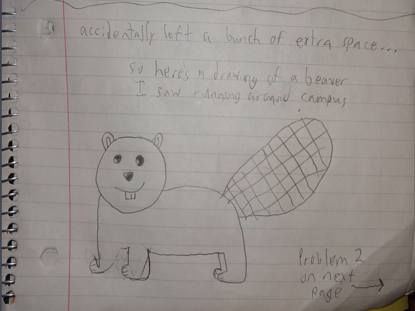
Fall 2020
Three variations
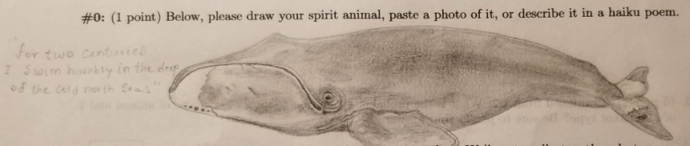
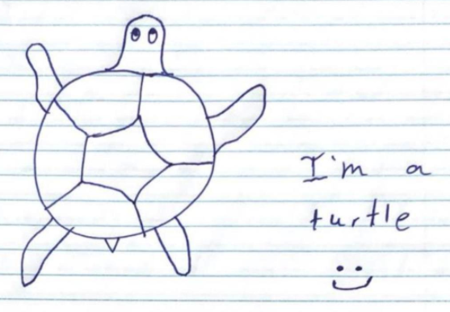
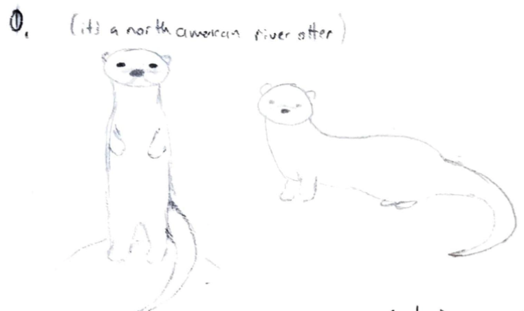
2019
Where the collection began
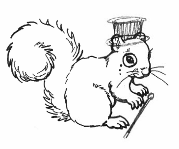
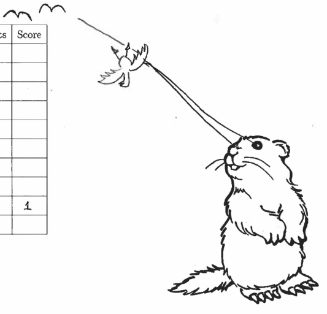
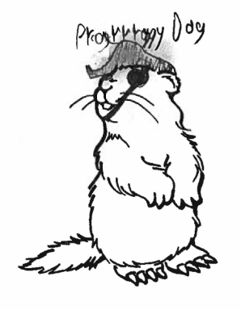
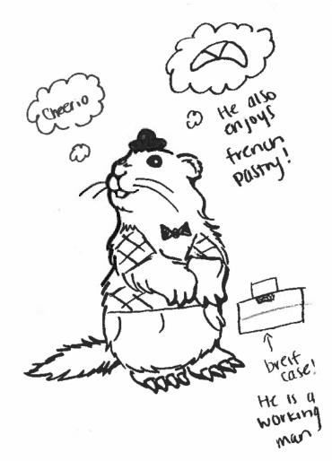
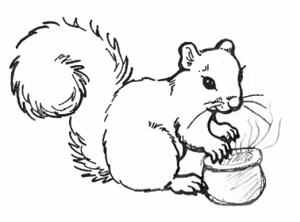
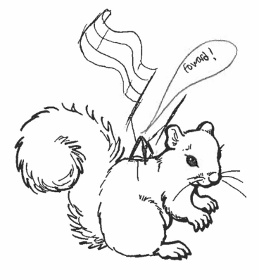
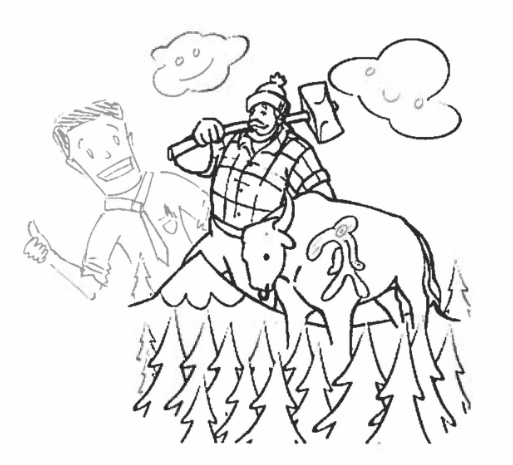